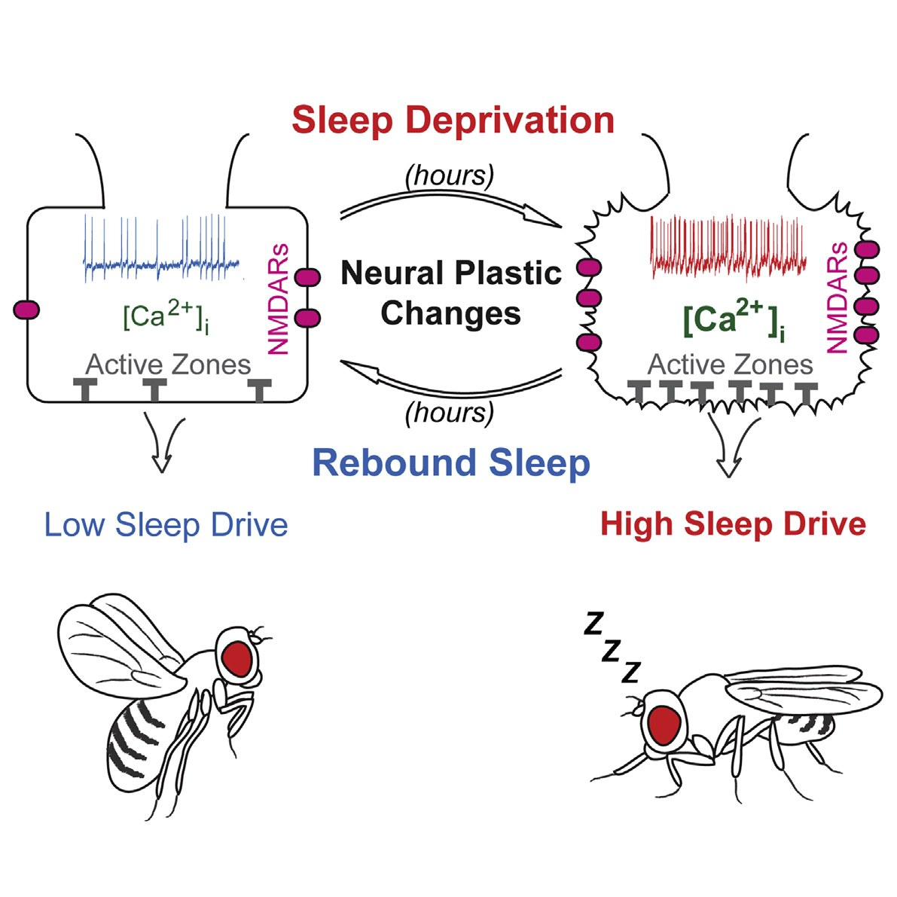
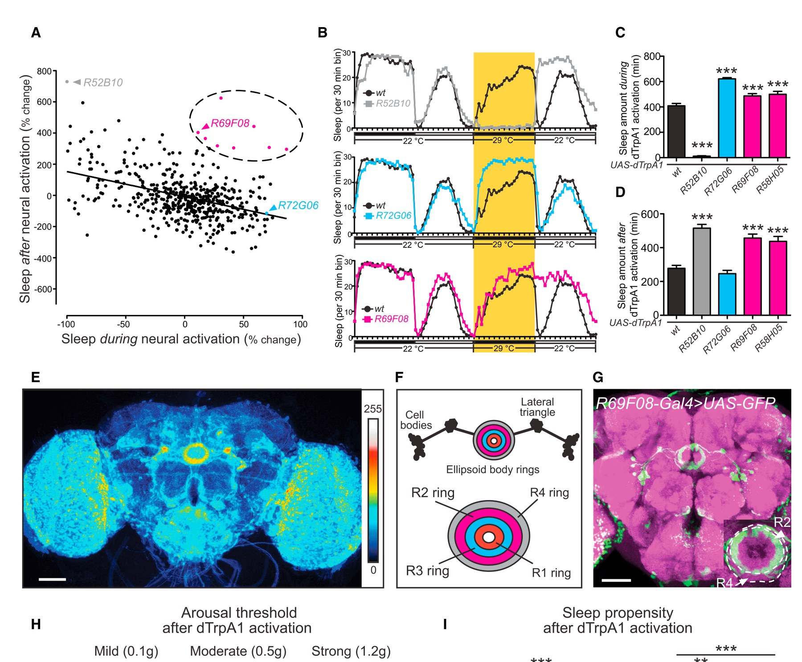
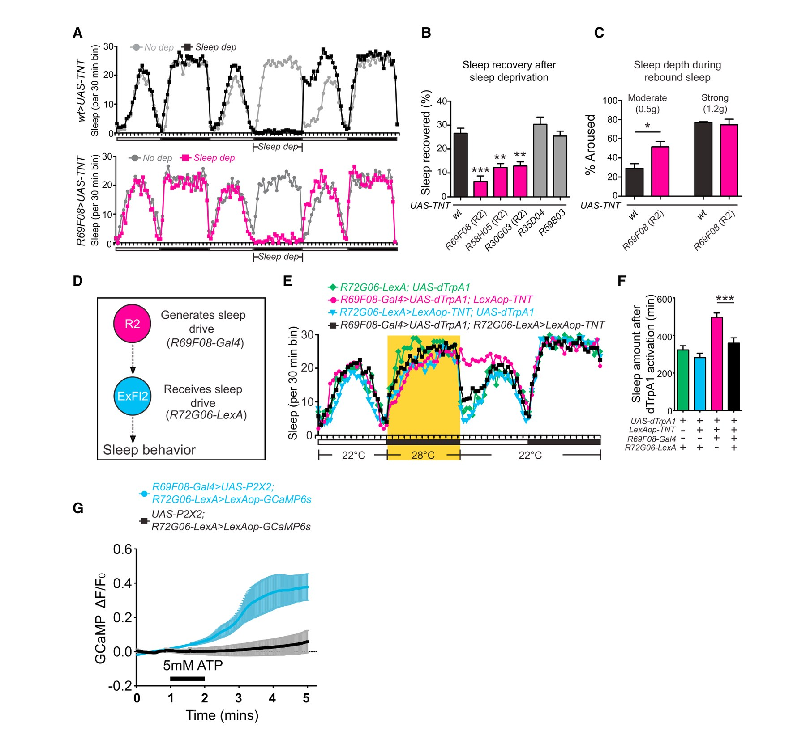
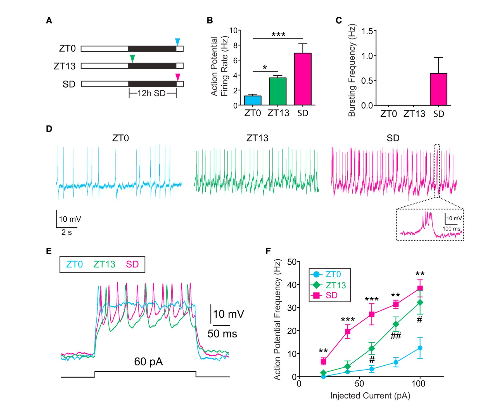
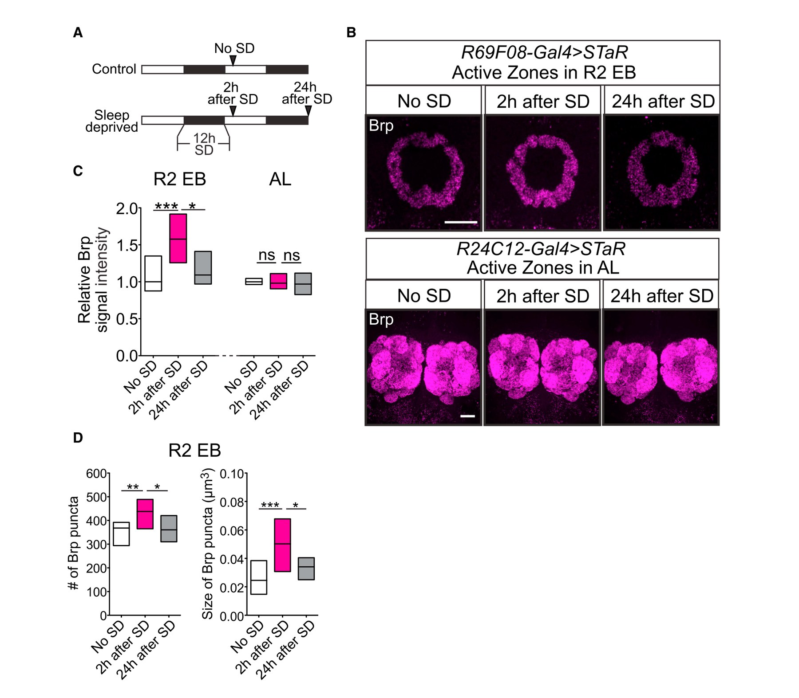
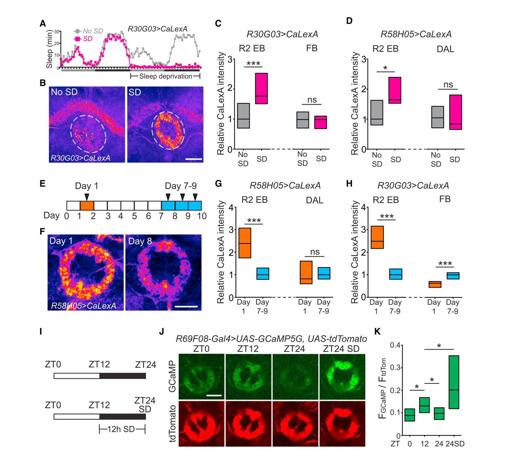
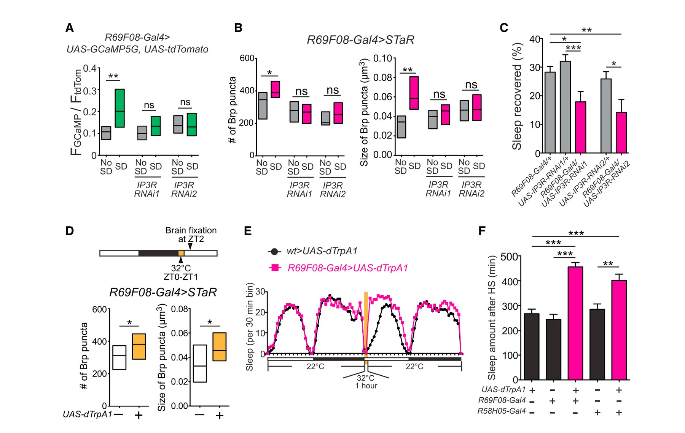
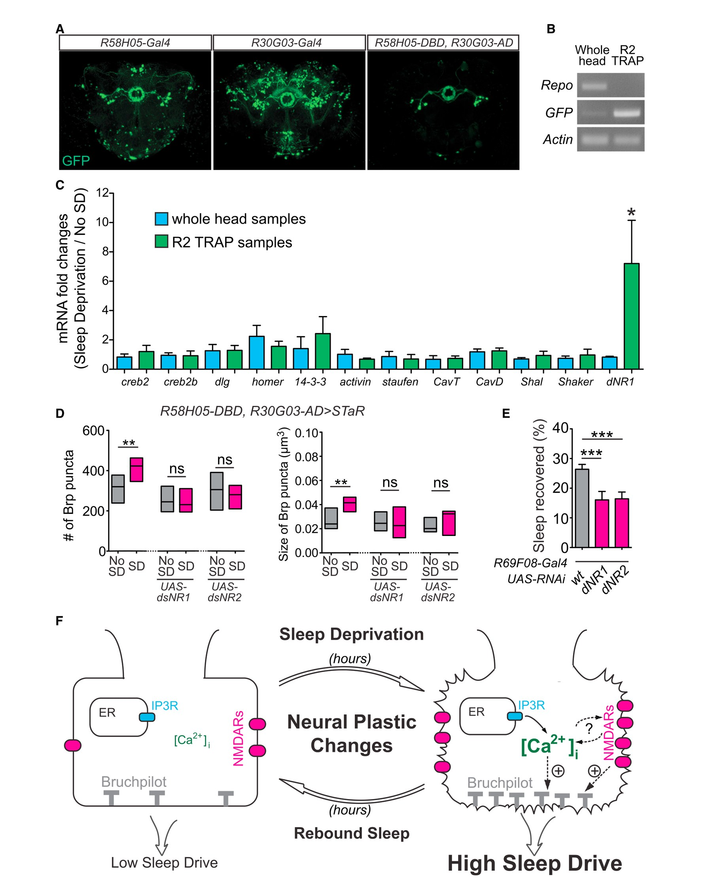

Figure 1、Figure S1 等），对应图片已插入到正文相应位置，方便你对照原文查找。对于不常见或重要的专业词汇，在中文后以英文原词括注，并配以简要解释。参考文献、致谢、作者贡献、经费与利益冲突部分按你的要求不翻译。正文翻译结束后，另附「新颖点与重要性总结」「背景知识补充」与「果蝇生理特点简介」三个板块。

原文：Prolonged wakefulness leads to an increased pressure for sleep, but how this homeostatic drive is generated and subsequently persists is unclear. Here, from a neural circuit screen in Drosophila, we identify a subset of ellipsoid body (EB) neurons whose activation generates sleep drive. Patch-clamp analysis indicates these EB neurons are highly sensitive to sleep loss, switching from spiking to burst-firing modes. Functional imaging and translational profiling experiments reveal that elevated sleep need triggers reversible increases in cytosolic Ca2+ levels, NMDA receptor expression, and structural markers of synaptic strength, suggesting these EB neurons undergo "sleep-need"-dependent plasticity. Strikingly, the synaptic plasticity of these EB neurons is both necessary and sufficient for generating sleep drive, indicating that sleep pressure is encoded by plastic changes within this circuit. These studies define an integrator circuit for sleep homeostasis and provide a mechanism explaining the generation and persistence of sleep drive.
翻译：持续的觉醒（wakefulness）会导致睡眠压力（pressure for sleep）升高，但这种稳态驱动（homeostatic drive）是如何产生、并随后得以持续的，目前尚不清楚。在此，通过对果蝇进行神经回路筛选（neural circuit screen），我们鉴定出一组椭球体（ellipsoid body，EB）神经元，其激活能够产生睡眠驱动。膜片钳（patch-clamp）分析表明，这些 EB 神经元对睡眠缺失（sleep loss）高度敏感，会从发放（spiking）模式切换为爆发式发放（burst-firing）模式。功能成像（functional imaging）与翻译组分析（translational profiling）实验揭示，升高的睡眠需求会触发胞质 Ca2+（cytosolic Ca2+）水平、NMDA 受体表达以及突触强度结构标志物（structural markers of synaptic strength）的可逆性增加，提示这些 EB 神经元发生了「睡眠需求」依赖的可塑性（"sleep-need"-dependent plasticity）。引人注目的是，这些 EB 神经元的突触可塑性对于睡眠驱动的产生既是必要的（necessary），也是充分的（sufficient），这表明睡眠压力正是由该回路内部的可塑性变化所编码。这些研究定义了一个睡眠稳态的整合器回路（integrator circuit for sleep homeostasis），并为睡眠驱动的产生与持续性提供了一种机制解释。
维持动物「内环境」（internal milieu）稳定性的稳态（homeostasis）概念，在 150 多年前首次被明确提出（Cannon, 1929）。这些原理同样适用于由稳态驱动（homeostatic drive）调控的动机性行为（motivated behaviors）（Berridge, 2004）。睡眠就是此类行为的一个典型例子——持续的觉醒会增加睡眠驱动（sleep drive，即睡眠压力 sleep pressure），从而导致睡眠量（sleep amount）和/或睡眠深度（sleep depth）的增加（「睡眠回补」sleep rebound）（Borbély, 1982）。然而，尽管一个多世纪以来人们对其进行了深入研究，这一过程背后的机制以及睡眠驱动本身的性质仍然不清楚。
此外，动机性行为（如进食或睡眠）的稳态调控通常在较长的时间尺度上发生（Berridge, 2004; Borbély, 1982）；在许多动物中，睡眠驱动的大量积累需要数小时的觉醒，并且即使在睡眠开始之后也常常维持数小时（Daan et al., 1984; Huber et al., 2000, 2004）。因此，要阐明编码睡眠驱动的过程，就需要同时理解睡眠驱动是如何产生的，以及它是如何持续的。
关于睡眠驱动的大部分研究都集中在细胞外睡眠调节物质（sleep regulatory substances，SRSs）上，例如腺苷（adenosine），其水平会随着持续觉醒而在脑的特定区域升高（「促眠物质模型」somnogen model）（Brown et al., 2012）。传统上认为这些 SRS 作用于哺乳动物中直接促进睡眠或觉醒的专用回路，例如腹外侧视前核（ventrolateral preoptic nucleus，VLPO）、正中视前核（median preoptic nucleus，MnPO），或特定的乙酰胆碱能核团（acetylcholinergic nuclei）（Methippara et al., 2005; Porkka-Heiskanen et al., 1997）。在该模型中，睡眠驱动是由这些 SRS（或称「促眠物质」somnogens）在细胞外空间（extracellular space）中的积累所产生的（Brown et al., 2012）。然而，这些 SRS 的半衰期（half-lives）通常（以分钟计）远比睡眠压力消散的时间进程（以小时计）短得多（Jonzon and Fredholm, 1985; Pettipher et al., 2007），这提出了一种可能性，即这些 SRS 并非直接编码睡眠压力，而是作为睡眠驱动的效应器（effectors）来促进睡眠（Benington and Heller, 1995）。
从工程学的角度来看，稳态系统需要三个组成部分：（1）一个传感器（sensor），周期性地对状态变量（state variable）进行采样；（2）一个整合器（integrator），处理这些信息以确定稳态驱动；（3）一个效应器（effector），通过直接操纵状态变量来响应该驱动（Enderle and Bronzino, 2012）。因此，一般性的设计原理预测，对于睡眠稳态而言，应当存在一些中枢回路，它们既能编码睡眠压力的大小，又在介导此类睡眠驱动的持续（perdurance）方面发挥关键作用。然而，此前人们从未找到过这样的回路。
在此，通过对果蝇神经元驱动品系进行大规模的正向筛选（forward screen），我们鉴定出一个能够产生睡眠驱动的神经回路。值得注意的是，即使在完全休息（充分睡眠）过的动物中，激活该回路也会诱发睡眠压力和持续的睡眠行为。相反，神经元沉默（neuronal silencing）实验揭示该回路在睡眠稳态中是特异地必需的。膜片钳分析表明，该回路对睡眠需求的变化高度敏感。重要的是，我们发现该回路的胞内 Ca2+（intracellular Ca2+）水平和突触强度不仅与稳态睡眠驱动的水平紧密相关，而且还能够特异性地操纵稳态睡眠驱动的水平。最后，细胞特异性的翻译组分析揭示，在睡眠剥夺（sleep deprivation）之后该回路中的 NMDA 受体显著上调（upregulation），并且我们表明这种上调是介导该回路中「睡眠需求」依赖的可塑性变化、并最终产生睡眠驱动的一个关键机制。综合起来，我们的数据提出一个模型，即睡眠压力由专用稳态整合器回路内部的可塑性变化所编码，从而为睡眠驱动的产生与持续性提供了机制层面的解释。
果蝇是研究睡眠的成熟遗传模式系统（genetic model system），并且与脊椎动物共享相似的睡眠调控机制（Cirelli, 2009; Sehgal and Mignot, 2011）。例如，果蝇的睡眠既受生物钟（circadian clock）调控，也受稳态睡眠驱动调控（Donlea et al., 2014; Kunst et al., 2014; Liu et al., 2014），并且特定的单胺能核团（monoaminergic nuclei）直接促进觉醒，且能通过抑制特定的促睡眠回路来实现这一作用（Liu et al., 2012; Ueno et al., 2012）。因此，为了研究调控睡眠与觉醒的神经回路机制，我们在果蝇中进行了大规模的神经元驱动品系筛选。根据表达模式稀疏性（sparseness）的标准，我们从 Rubin/Janelia Farm 品系库（Jenett et al., 2012）中选取了 505 个 Gal4 驱动品系，它们共同覆盖了果蝇脑的大部分神经纤维网（neuropils）。利用这些驱动品系，我们在夜间用热激活的阳离子通道（heat-activated cation channel）dTrpA1（Hamada et al., 2008）条件性地激活不同的神经元亚群达 12 小时，并测量了该夜间以及 dTrpA1 激活停止后第二天白天的睡眠量（Figure 1）。dTrpA1 激活期间与激活之后的睡眠量总体上呈现出反映睡眠稳态的负相关关系（Figure 1A）。例如，促觉醒（wake-promoting）驱动品系（如 R52B10-Gal4）倾向于在 dTrpA1 激活结束后诱发显著的「睡眠回补」（Figures 1A–1D 和 S1A）。通过这一筛选，我们鉴定出多个在 ExFl2 神经元中表达的促睡眠驱动品系，包括 R72G06-Gal4 和 R12G09-Gal4（Figures 1A–1D、S1C 和 S1D）。这些神经元最近被证明作为睡眠「效应器」回路发挥作用，其激活可直接诱导果蝇睡眠（Donlea et al., 2011, 2014），从而验证了我们的方法。
令我们惊讶的是，我们发现有几个品系明显违反了 dTrpA1 激活期间与激活之后睡眠量之间的负相关关系（Figures 1A–1D、S1A、S1B 和 S1E–S1G）。这些驱动品系在 dTrpA1 激活停止后强烈诱导睡眠，但同时也倾向于在激活期间增加睡眠。对这 8 个驱动品系表达模式的分析表明，其中大多数品系照亮了一组特定的椭球体（ellipsoid body，EB）环神经元（ring neurons）——即 R2 神经元（Figures 1E、1F 和 S1E）。我们首先聚焦于其中的一个驱动品系 R69F08-Gal4，因为它在中央脑（central brain）中的表达模式最为特异（Figure 1G）。dTrpA1 激活后观察到的静止状态并未持续到第二天，提示这并非继发于神经损伤（Figure S1B）。为了进一步确认在 R69F08-Gal4 > UAS-dTrpA1 动物热激活之后观察到的白天静止状态确实是由于睡眠、而非麻痹（paralysis）或运动功能受损（locomotor impairment），我们进行了一系列对照实验。这种静止（quiescence）行为是可逆的，并伴随觉醒阈值（arousal threshold）的升高（Figure 1H），提示这些动物是睡着了而非被麻痹。这些 R69F08-Gal4 > UAS-dTrpA1 果蝇在 ZT2（授时因子时间 2，Zeitgeber time 2）被完全唤醒（>2 g 刺激 5 秒）之后的清醒活动与对照果蝇相似，表明这些果蝇在 dTrpA1 激活之后没有运动功能受损（Figure S1H）。为确保这些果蝇确实处于静止、而非只是在梳理（grooming）或进食（feeding），我们对 R69F08-Gal4 > UAS-dTrpA1 果蝇进行了视频分析，并在 dTrpA1 激活后的 2 小时内对其行为进行人工评分。正如预期，我们发现这些果蝇在这 2 小时的大部分时间里保持静止，只有一小部分时间用于梳理或进食（静止：80.0% ± 1.9%；梳理：9.6% ± 1.2%；进食：3.7% ± 0.8%，n = 15）。由 R2 细胞激活所引发的睡眠行为与对照相比睡眠更深（Figure 1H）。此外，在 ZT2（dTrpA1 激活停止后 2 小时）被短暂唤醒之后，这些 R69F08-Gal4 > UAS-dTrpA1 果蝇更有可能重新入睡，而且入睡更快（Figure 1I），进一步表明 dTrpA1 激活之后睡眠倾向（sleep propensity）升高。一个独立驱动品系（R58H05-Gal4，同样在这些 R2 神经元中驱动表达）也得到了相似的数据（Figures 1C、1D、1H 和 1I）。由于睡眠量和睡眠深度的增加是稳态睡眠驱动升高的标志（Borbély, 1982; Huber et al., 2004），并且由于这些表型出现在神经激活停止之后，这些数据有力地表明，遗传学上激活 R2 神经元会诱导出持续的睡眠驱动。

为了解决 R2 回路是否同样是产生稳态睡眠驱动所必需的问题，我们评估了沉默这些神经元是否会损害睡眠剥夺之后的睡眠恢复。利用三个受限的 Gal4 驱动品系（R69F08-Gal4、R58H05-Gal4 或 R30G03-Gal4）在 R2 神经元中表达破伤风毒素（tetanus toxin，TNT）（Sweeney et al., 1995）——该毒素抑制神经递质（neurotransmitter）的释放——显著减少了机械性睡眠剥夺之后的「回补睡眠」（rebound sleep）（Figures 2A 和 2B）。此外，与对照动物相比，睡眠剥夺之后的睡眠深度也有所降低（Figure 2C）。相比之下，当使用两个在我们的筛选中似乎会诱导睡眠压力、但不含 R2 神经元的驱动品系（R35D04-Gal4 和 R59B03-Gal4；Figure S1E）表达 TNT 时，睡眠回补并未受到显著影响（Figure 2B）。R27G06-Gal4 未在该实验中检测，因为它与 UAS-TNT 组合时是致死的。重要的是，使这些 R2 环神经元失活并不会显著影响基础睡眠（baseline sleep），表明这些神经元在睡眠的稳态调控中发挥特异性作用（Figures S2A–S2C）。综合我们的神经激活数据，这些发现表明，该 R2 回路对于睡眠的稳态调控既是必要的、也是充分的。
如果 R2 回路编码生理性的睡眠驱动，那么人们会预期它作用于睡眠「效应器」回路的上游。在果蝇中，最近的数据表明，投射到背侧扇形体的 ExFl2 神经元（project to the dorsal fan-shaped body）作为一个「效应器」回路发挥作用，响应睡眠驱动的升高而直接促进睡眠（Donlea et al., 2014）。因此，我们探究了我们所鉴定的 R2 回路是否在睡眠的稳态调控中作用于 ExFl2 回路的上游（Figure 2D）。为了解决这一问题，我们使用 LexA/LexAop 系统（Lai and Lee, 2006）阻断 ExFl2 神经元中神经递质的释放，并利用 Gal4/UAS 系统评估了 R2 神经元激活之后的睡眠。R72G06-LexA 品系在 ExFl2 神经元中驱动表达，我们确认使用 dTrpA1 对这些神经元进行热遗传学激活（thermogenetic activation）能够促进睡眠（Figures S2D–S2F），与 R72G06-Gal4（Figure 1）以及其他此前描述的 ExFl2 驱动品系（Donlea et al., 2011）相似。同先前一样，使用 R69F08-Gal4 驱动品系在夜间激活 R2 神经元（WT > LexAop-TNT; R69F08-Gal4 > UAS-dTrpA1）会在第二天白天导致「回补」样睡眠。当同时抑制 ExFl2 的神经传递时（R72G06-LexA > LexAop-TNT; R69F08-Gal4 > UAS-dTrpA1），这一表型在很大程度上被削弱（Figures 2E 和 2F），这与 R2 神经元经由 ExFl2 神经元促进睡眠的观点一致。为检验 R2 与 ExFl2 神经元之间潜在的功能连接（functional connectivity），我们使用两套二元表达系统（two binary systems）同时在 R2 神经元中表达 ATP 门控的 P2X2 受体（Lima and Miesenböck, 2005），并在 ExFl2 神经元中表达 GCaMP6s。如 Figure 2G 所示，在实验果蝇中，通过施加 ATP 激活 R2 神经元会在 ExFl2 神经元中诱导 GCaMP 信号的大幅增加，而在 R2 神经元中缺乏 P2X2 受体的对照果蝇中则没有此现象。综合起来，这些数据有力地表明，R2 神经元在睡眠的稳态调控中作用于 ExFl2 神经元的上游。

前述数据提示睡眠驱动在 R2 回路内部产生。为了解决这些神经元的功能特性是否随睡眠需求而改变的问题，我们在不同时间点以及睡眠剥夺之后对这些神经元进行了膜片钳记录（Figure 3A）。由于这些神经元此前从未被电生理学表征过，我们首先尝试了不同的记录方式。我们发现这些 R2 细胞适合使用 beta-escin 的穿孔膜片钳记录（perforated patch-clamp recordings）（Sarantopoulos et al., 2004），鉴于这些神经元中胞内 Ca2+ 的重要性（见下文），我们优先采用这种方式。我们鉴定出 R2 簇内的两类神经元：一类表现出自发性动作电位（action potential，AP）发放，另一类在本质上似乎是非发放型（non-spiking）的。我们聚焦于发放型细胞，因为它们构成了 R2 簇中神经元的绝大多数（约 92%）。在基础条件下，我们在两个时间点进行了记录：ZT0–ZT2（此时睡眠压力应当较低）和 ZT13–ZT15（此时睡眠压力应当中度升高）。我们发现，与 ZT0–ZT2 相比，R2 神经元在 ZT13–ZT15 的自发 AP 发放频率升高了约 3 倍。此外，睡眠剥夺之后，与在 ZT0–ZT2 评估的休息果蝇相比，自发 AP 发放频率进一步升高（Figures 3B 和 3D）。引人注目的是，在睡眠剥夺果蝇的大多数记录（75%）中观察到了爆发式发放事件（bursting events），而在 ZT0–ZT2 或 ZT13–ZT15 的基础条件下则从未观察到（Figures 3C 和 3D），提示在睡眠缺失后切换到了「增强」（potentiated）状态。此外，在大多数（ZT13–ZT15）和所有（睡眠剥夺）测量的去极化电流（depolarizing currents）下，诱发的 AP 发放频率均高于 ZT0–ZT2 时（Figures 3E 和 3F）。睡眠剥夺后动物中 R2 神经元的静息膜电位（resting membrane potential）也更加去极化，而输入电阻（input resistance）没有改变（Figures S3A 和 S3B）。综合起来，这些数据表明，在睡眠需求更大的条件下，R2 回路的活性与兴奋性（excitability）会升高，并且这些神经元特异地只在睡眠剥夺之后表现出爆发式发放。

睡眠剥夺动物 R2 神经元向「爆发式」发放模式的转变不仅提示其内在细胞特性（intrinsic cellular properties）发生了变化，还提出了这些细胞内发生可塑性变化的可能性（Moore et al., 2009）。支持这一概念的是，Figure 3 中的部分电生理数据是在睡眠剥夺结束后 1–2 小时获得的，提示这一表型具有持续性。鉴于突触强度的可塑性变化可能是一种编码睡眠驱动积累与持续性的精巧机制，我们研究了睡眠剥夺之后 R2 细胞中突触强度的结构标志物是否发生变化。为此，我们使用了 STaR（Synaptic Tagging with Recombination，重组介导的突触标记）系统（Chen et al., 2014），该系统通过以翻转酶（flippase，FLP）/翻转酶重组靶点（flippase recombinase target，FRT）依赖的方式标记天然 Bruchpilot（BRP），从而能够在特定回路内特异性地标记活性区（active zones）。BRP 水平的改变是成体神经元中活性依赖可塑性（activity-dependent plasticity）的一个关键机制（Sugie et al., 2015），而突触结构、尤其是活性区的数量与大小的变化，通常与突触强度的变化相关（Holderith et al., 2012; Weyhersmüller et al., 2011）。在机械性睡眠剥夺结束 2 小时后，与休息的对照果蝇相比，睡眠剥夺果蝇中 R2 环结构内的 BRP 信号显著升高（Figures 4A–4C），而且这一更高的 BRP 信号源于 R2 环中 BRP 点状信号（puncta）数量和大小的同时增加（Figure 4D）。使用一种独立的热遗传学方法诱导睡眠剥夺，也得到了相似的数据（Figures S3E 和 S3F）。当经过 24 小时恢复性睡眠（recovery sleep）使睡眠驱动消散后，升高的 BRP 信号降低到休息对照动物的水平（Figures 4B 和 4C），证明这些变化是可逆的。相比之下，睡眠剥夺之后 BRP 信号的增加并未在脑中的其他神经元中观察到，包括触角叶局部中间神经元（antennal lobe local interneurons）、ExFl2 神经元和 R3 环神经元，提示这一表型具有特异性（Figures 4B、4C、S3C 和 S3D）。尽管此前有研究发现睡眠剥夺之后触角叶（antennal lobes）中的 BRP 增加（Gilestro et al., 2009），但该研究评估的是整个触角叶结构（使用抗 BRP 抗体），而我们是使用 STaR 系统来检查特定的触角叶中间神经元。综合起来，这些数据表明，R2 神经元中突触强度分子标志物的水平与睡眠驱动水平相关，并提示 R2 回路中「睡眠需求」依赖的可塑性变化可能与产生稳态睡眠驱动有关。

实验证据与理论模型都提示，胞内 Ca2+ 水平在驱动神经可塑性中发挥关键作用（Berridge, 1998; O'Leary et al., 2014）。因此，我们接着探究 R2 神经元中的胞内 Ca2+ 水平是否也与不同水平的睡眠驱动相关。为了在数小时的时间进程中测量 Ca2+ 水平，我们使用了 CaLexA（Calcium-dependent nuclear import of LexA，钙依赖的 LexA 核输入）系统（Masuyama et al., 2012）。该系统在胞质 Ca2+ 持续升高时驱动 GFP 的表达。我们使用一个较强的 R2 驱动品系（R30G03-Gal4）在 R2 神经元中驱动 CaLexA，同时将该驱动品系所标记的其他神经元中的信号作为内部对照。在 24 小时机械性睡眠剥夺之后（Figure 5A），睡眠剥夺果蝇 R2 环结构中的 GFP 信号明显高于对照果蝇，而其他神经纤维网结构（如扇形体 Fan-shaped body）中的信号强度则没有变化（Figures 5B 和 5C）。使用另一个含 R2 神经元的驱动品系（R58H05-Gal4）也得到了相似的数据（Figure 5D）。这些数据提示，睡眠剥夺之后 Ca2+ 水平特异地只在 R2 神经元内升高。为了排除 R2 神经元中 CaLexA 信号升高仅仅是由机械刺激引起、而非睡眠压力本身变化所致的可能性，我们仅在主观白天（subjective day，此时果蝇大多处于清醒状态）或主观夜间（subjective night，此时果蝇通常处于睡眠状态）对果蝇进行 12 小时机械性睡眠剥夺，并评估 R2 神经元中的 CaLexA 信号。当 R30G03-Gal4 > CaLexA 动物在主观夜间被机械性睡眠剥夺时，R2 神经元中的 CaLexA 信号与对照相比显著升高，而在白天睡眠剥夺时则与对照相似（Figures S4A–S4D）。这些数据提示，CaLexA 信号的升高是由升高的睡眠驱动引起的，而非仅由机械刺激引起。已有充分描述表明，多个物种中非常年幼的动物与成体相比，睡眠量和睡眠深度都会增加（Frank and Heller, 1997; Roffwarg et al., 1966）。在果蝇中，最近一项研究证明，年幼果蝇与较老动物相比睡眠驱动显著升高（Kayser et al., 2014）。与这一观点一致，我们发现非常年幼动物中 R2 神经元的 CaLexA 信号显著高于较老动物（Figures 5E–5H）。综合起来，这些成像数据揭示，在与睡眠驱动显著升高相关的条件下——即睡眠剥夺之后或非常年幼的动物中——R2 神经元中的 Ca2+ 水平会升高。
我们接着探究在没有睡眠剥夺的情况下，这些 R2 神经元中的 Ca2+ 水平是否会随睡眠压力自然变化。我们使用遗传编码的 Ca2+ 报告子（genetically encoded Ca2+ reporter）UAS-myrGCaMP5G（Melom and Littleton, 2013）来监测 R2 环结构中的实时 Ca2+ 水平。我们在 ZT0（低睡眠驱动）、ZT12（中度睡眠驱动）、ZT24（低睡眠驱动）以及 ZT24 并经过 12 小时睡眠剥夺后（高睡眠驱动）测量了 Ca2+ 水平（Figure 5I）。我们发现 R2 环中的基础 Ca2+ 水平在夜晚早期（ZT12）高于清晨（ZT0 和 ZT24）（Figures 5J 和 5K）。这一差异应归因于睡眠驱动的变化而非昼夜时间（circadian time），因为在夜间经过 12 小时睡眠剥夺后，ZT24 时 R2 环中的 Ca2+ 水平进一步升高（Figures 5J 和 5K）。使用一种独立的热遗传学方法诱导睡眠剥夺、或使用一个独立的 GCaMP 品系，也发现了类似的 GCaMP 信号升高，表明该效应不依赖于机械摇晃（mechanical shaking）或特定的 GCaMP（Figures S4E–S4H）。相比之下，这一升高并未在 R2 环附近的神经元结构（即 R3 和 R4m 环）中观察到，表明它并非广泛发生在所有椭球体环中（Figure S4I）。因此，我们的数据表明，R2 神经元中的 Ca2+ 水平以可分级（scalable）的方式与不同水平的睡眠驱动相关，这与该回路中的神经可塑性变化在介导睡眠稳态中的潜在作用相一致。

我们假设这些胞内 Ca2+ 水平的变化对于 R2 神经元中所见的「睡眠需求」依赖的结构可塑性具有功能重要性。如果是这样，改变这些神经元中的胞内 Ca2+ 水平就提供了一种检验途径，用以测试操纵神经可塑性是否会影响睡眠稳态。既往研究已经表明，降低肌醇三磷酸受体（Inositol-triphosphate receptor，IP3R）的活性会损害胞质 Ca2+ 水平的升高以及 Ca2+ 依赖的可塑性（Berridge, 1998）。因此，我们在 R2 神经元中驱动表达了两个不同的 UAS-IP3R-RNAi 转基因（transgenes）（Murmu et al., 2010），并检验其对胞内 Ca2+ 水平和结构可塑性的影响。我们首先确认这两个 RNAi 转基因都能有效降低 IP3R 转录本（transcript）（Figure S5A）。使用任一 RNAi 转基因在 R2 神经元中敲低（knockdown）IP3R，都在很大程度上抑制了这些细胞在睡眠剥夺之后所见的胞内 Ca2+ 升高（Figure 6A），与一个无关的对照 RNAi 品系形成对比（Figure S5C）。如 Figure 6B 所示，用任一 IP3R-RNAi 品系阻断 R2 神经元中胞内 Ca2+ 水平的升高，都会显著损害这些神经元在睡眠剥夺之后所见的 BRP 点状信号数量与大小的增加。为了解决这些操控对睡眠稳态的影响，我们在 R2 细胞中驱动表达这两个 IP3R-RNAi 转基因，并测量了睡眠剥夺后动物的睡眠回补。重要的是，使用任一 RNAi 转基因在 R2 神经元中敲低 IP3R，都会导致恢复性睡眠（recovery sleep）与对照相比显著减少（Figure 6C）。此外，使用任一 IP3R-RNAi 品系在 R2 神经元中敲低 IP3R 都不影响基础睡眠，表明其效应特异性地作用于睡眠稳态（Figure S5B）。鉴于在 R2 神经元中胞质 Ca2+ 和 BRP 升高缺失的情况下仍保留部分回补睡眠（Figures 6A–6C），可能还存在编码稳态睡眠驱动的其他机制。综合起来，这些数据提示，R2 神经元中 Ca2+ 依赖的可塑性变化对于睡眠的正常稳态调控是特异地必需的。
为了在 R2 回路内条件性地升高胞内 Ca2+ 水平，对于在 R2 神经元中表达 dTrpA1 的动物，我们在 ZT0–ZT1 升高温度（而不是像先前那样在 ZT12–ZT24 激活 dTrpA1）。值得注意的是，这一方案导致了这些细胞中 BRP 点状信号数量与大小的增加，与睡眠剥夺后所见的情形相似（Figure 6D），提示突触强度升高。此外，R2 回路中仅 30 分钟的 dTrpA1 激活，就能在温度升高之后诱导出模仿「回补睡眠」的显著睡眠增加，尽管这些动物此前完全休息过（Figures 6E、6F 和 S5D）。因此，这些数据提示，R2 回路突触强度的 Ca2+ 依赖变化对于编码睡眠驱动不仅是必要的，而且是充分的。

尽管 Ca2+ 信号传导对神经可塑性至关重要，但它也参与多样的细胞信号通路（Clapham, 2007）。因此，为了进一步鉴定并检验睡眠稳态驱动「可塑性依赖」生成背后的其他机制，我们在 R2 神经元中进行了细胞特异性的翻译组分析实验。由于该技术的效用极大程度上取决于使用一个极其特异的驱动品系，我们使用 split-Gal4 系统（Luan et al., 2006）生成了一个几乎只包含这 16 个 R2 神经元的驱动品系（Figure 7A）。正如预期，激活该 R2-Split-Gal4 驱动品系会在刺激停止后导致持续的睡眠增加，与使用其他 R2 Gal4 驱动品系所见的情形一致（Figures S6A–S6D）。我们使用该 R2-Split-Gal4 驱动品系在 R2 回路中表达 EGFP-L10a 融合蛋白，并进行了「翻译中核糖体亲和纯化」（Translating Ribosome Affinity Purification，TRAP）实验（Huang et al., 2013），以从这 16 个神经元中分离出正在翻译的转录本。正如预期，RT-PCR 证明 R2 TRAP 样品中 GFP 转录本显著富集，而同一批样品中胶质细胞特异标志物 repo 的 mRNA 几乎检测不到（Figure 7B）。我们从睡眠剥夺和休息的对照果蝇中提取了 R2 神经元特异的 mRNA，并使用 qPCR 检测了 R2 细胞中可塑性相关转录本的水平。有趣的是，一个 NMDA 受体亚基（dNR1）的水平在 R2 神经元中显著（约 7 倍）且特异地升高，但并未广泛地在所有神经元中升高（Figure 7C）。果蝇中的 NMDA 受体由两个亚基组成：dNR1 和 dNR2（Xia et al., 2005）。为了确认 NMDA 受体蛋白水平的相应升高，我们使用抗 dNR2 抗血清进行了免疫染色实验，揭示睡眠剥夺之后 R2 神经元中 dNR2 水平显著升高（Figures S6E 和 S6F）。为了解决 NMDA 受体是否为睡眠缺失所诱导的 R2 神经元结构可塑性所必需，我们使用两个靶向 dNR1 或 dNR2 的不同 RNAi 品系（Wu et al., 2007）进行了 RNAi 敲低实验，然后使用 STaR 系统检测 BRP 点状信号。我们首先确认这些 RNAi 品系分别能有效降低 dNR1 和 dNR2 的水平（Figures S6G 和 S6H）。接着，我们发现，在 R2 神经元中敲低 dNR1 或 dNR2 中的任一者，都会显著抑制这些细胞中睡眠剥夺所诱导的 BRP 点状信号数量与大小的增加，表明 NMDA 受体在 R2 神经元中为「睡眠需求」依赖的可塑性所必需（Figure 7D）。重要的是，在 R2 回路中敲低 dNR1 或 dNR2 中的任一者，都会显著减少睡眠剥夺之后的回补睡眠（Figure 7E），但不影响基础睡眠（Figure S6I），提示 NMDA 受体（NMDAR）依赖的可塑性在这些神经元中为产生稳态睡眠驱动所特异地必需。因此，这些数据鉴定出介导 R2 神经元神经可塑性变化的一个关键分子机制，并证明这种可塑性为睡眠的稳态调控所必需。

如前所述，稳态系统被预测由「传感器」（sensor）、「整合器」（integrator）和「效应器」（effector）回路组成。睡眠稳态「效应器」回路（如哺乳动物中的 VLPO/MnPO（Saito et al., 2013）或果蝇中的 ExFl2 神经元（Donlea et al., 2014））的激活会直接诱导睡眠，其持续性依赖于该回路受到的持续刺激（另见 Figure 1B）。相比之下，在非睡眠剥夺动物中，即使仅对 R2 回路进行 30 分钟的激活，也会在刺激停止后导致睡眠量和睡眠深度的长时间增加。这一表型表明，激活这些神经元即使在完全休息的动物中也会产生睡眠驱动。这一不同寻常的表型，结合我们的发现——这些 R2 神经元作用于「效应器」ExFl2 神经元的上游，并发生「睡眠需求」依赖的可塑性变化——提示 R2 回路是睡眠稳态的一个关键「整合器」。
睡眠稳态被认为不仅会在引发强烈睡眠驱动的条件下（即睡眠剥夺）运作，而且也会在基础状态下、当睡眠压力在觉醒期接近结束时逐渐积累时运作（Borbély, 1982）。有趣的是，尽管我们的数据提示 R2 神经元能够在基础条件下感知睡眠驱动的变化（Figures 3B、3D、3F 和 5I–5K），但它们在这种情形下对于睡眠量并非必不可少（Figures 2A 和 S2A–S2C）。因此，虽然 R2 神经元在睡眠剥夺之后的睡眠稳态调控中发挥关键作用，但在基础条件下很可能还有其他机制发挥作用。
我们的数据表明，R2 神经回路内部的可塑性变化会产生睡眠驱动（Figure 7F）。在该模型中，持续的觉醒导致 R2 神经元中胞内 Ca2+ 水平持续升高，进而导致更大的突触强度（体现为活性区数量与大小的增加）以及这些神经元更大的兴奋性（体现为其向爆发式发放的转变）。因此，睡眠缺失会在 R2 神经元中同时诱导突触与非突触（synaptic and non-synaptic）可塑性，二者共同作用以显著增强这些细胞的活性。NMDA 受体以其在突触可塑性中的作用而著称（Malenka and Nicoll, 1993），在睡眠缺失时也在 R2 神经元中上调，从而与胞内 Ca2+ 的升高协同或并行地进一步增强突触强度。正如我们的数据所提示（Figures S6E 和 S6F），NMDA 受体被显示在突触前（presynaptically），这意味着 R2 神经元与其下游伙伴之间连接的增强。然而，NMDAR 也可能作用于突触后（postsynaptically）。无论哪种情况，睡眠驱动都将由 R2 回路的增强程度（degree of potentiation）来编码，随后通过持续激活睡眠「效应器」神经元（如果蝇中的 ExFl2 细胞）来促进睡眠。
我们的发现支持一个替代传统「促眠物质模型」（somnogen model）的睡眠稳态模型。我们提出，全局性的睡眠驱动并非由脑中不同水平的细胞外物质所编码，而是由专用神经回路中 Ca2+ 与 NMDA 受体依赖的可塑性变化所编码。此外，与「促眠物质」或 SRS（其半衰期约为数分钟量级）的情形不同，我们的模型为「睡眠驱动在恢复性睡眠开始后仍持续数小时」这一现象提供了机制解释。尽管果蝇与哺乳动物的脑结构不同，但核心的回路原理常常是共享的（Borst and Helmstaedter, 2015; Strausfeld and Hirth, 2013）。因此，哺乳动物中也可能存在一个睡眠稳态整合器回路，其可塑性变化编码睡眠驱动。
睡眠分析按此前所述的方法进行（Liu et al., 2014）。对于睡眠剥夺实验，使用漩涡振荡器安装板（vortexer mounting plate）和多管漩涡振荡器（multi-tube vortexer，Trikinetics）对果蝇进行机械刺激，每分钟刺激 5 秒，持续 12 或 24 小时。仅分析剥夺期间睡眠量相比基础条件减少 ≥95% 的果蝇的数据。「恢复的睡眠百分比」（% Recovered sleep）计算方式为：剥夺后果蝇与未受扰动的对照动物在剥夺后最初 6 小时内睡眠量的差值，除以睡眠剥夺期间所损失的睡眠量。
对于 BRP 和 CaLexA 测量，果蝇脑分别用抗 V5 或抗 GFP 进行全脑免疫染色。图像在 63× 放大倍数下拍摄，以 1,024 × 1,024 像素采集，并在 Fiji/ImageJ 中进一步分析。为测量信号强度，计算包含 R2 环或其他感兴趣区域（regions of interest，ROIs）的整个图像堆栈（stack）的所有像素之和，并测量、扣除 ROI 邻近的背景强度。对于 BRP 点状信号的分析，从原始图像堆栈中提取仅含 R2 环信号的堆栈，并使用「3D Objects Counter」插件自动计算 BRP 点状信号的数量与大小。用于计算 BRP 点状信号的阈值对每个图像堆栈手动确定，使插件识别出最大数量的 BRP 点状信号。对于 CaLexA 睡眠剥夺实验，使用 7–9 日龄果蝇。为尽量减少环境刺激的影响，果蝇在睡眠剥夺前 1 天被转入持续黑暗（constant darkness，DD）环境，随后按上述方法在 DD 中进行 12 或 24 小时的睡眠剥夺。
对于胞内 Ca2+ 水平的测量，检查 7–9 日龄的 R69F08-Gal4 > UAS-myrGCaMP5, UAS-CD4-tdTomato 或 R69F08-Gal4 > UAS-GCaMP6s, UAS-CD4-tdTomato 果蝇。在解剖后立即（5 分钟内）于不同时间点（ZT0 和 ZT12）或睡眠剥夺之后测量 R2 环神经纤维网中的 GCaMP 信号。所有脑均在成体血淋巴样生理盐水（adult hemolymph-like saline，AHLS）中快速解剖，并使用 LSM700 共聚焦显微镜（confocal microscope）成像。通过快速预扫描 tdTomato 信号（543 nm）在 15 秒内定位 R2 环结构。在 63× 水浸物镜（water-immersion objective lens）下选择一个包含最大 tdTomato 信号面积与强度的单一光学切片。GCaMP 信号以每秒 2 帧（fps）记录 1 分钟。使用 1 分钟记录中所有帧的平均投影来计算基础 GCaMP 信号。R2 环的 ROI 通过 tdTomato 信号勾画。同一 ROI 中 GCaMP 与 tdTomato 的荧光信号各自求和，并在 Fiji/ImageJ 中归一化到背景。将同一 ROI 的 GCaMP 信号除以 tdTomato 信号，以校正标本间的差异。
其他方法与实验细节见补充实验方法（Supplemental Experimental Procedures）。